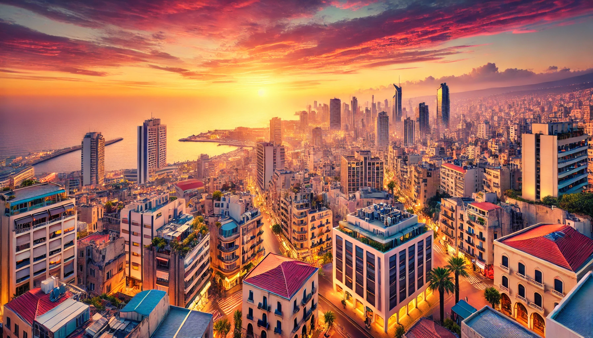
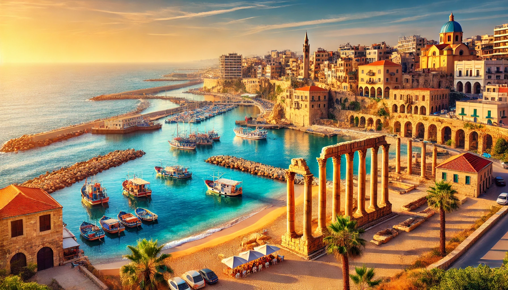
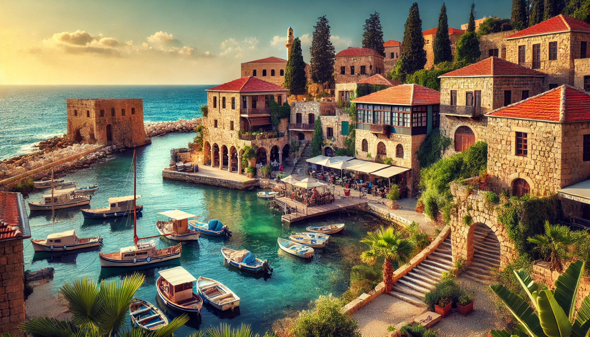
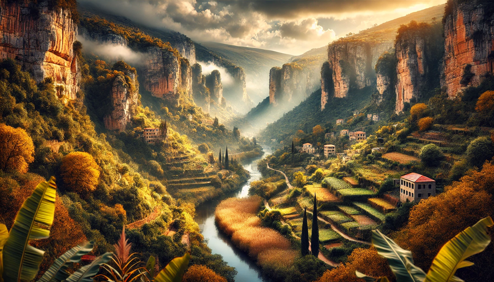
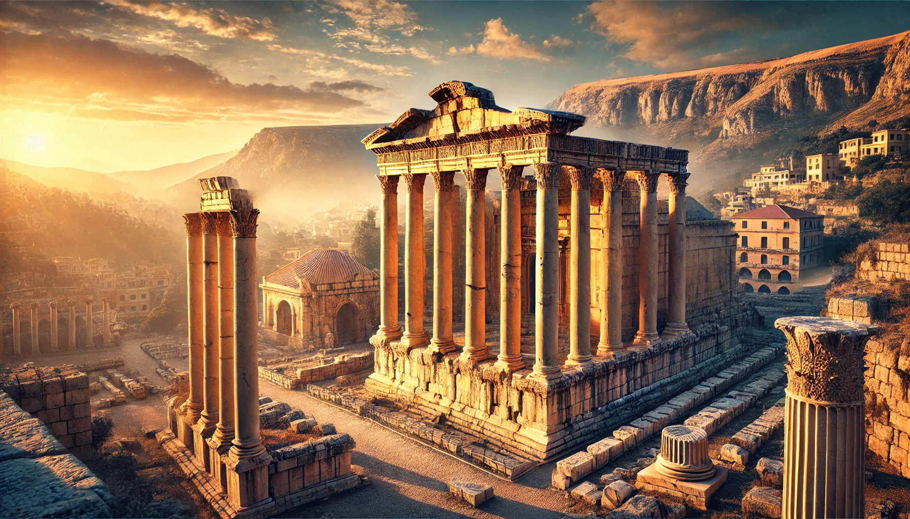

Some of Best Tourism Places to visit in Lebanon:
-

- Beirut Known as the "Paris of the Middle East," Beirut has a dynamic mix of modern and traditional elements. Key spots include the Corniche waterfront, National Museum of Beirut, Hamra Street for shopping, and Mar Mikhael for nightlife.
-

- Byblos (Jbeil):One of the oldest continuously inhabited cities, Byblos has ancient ruins, charming souks, and a beautiful harbor. Don't miss the Byblos Castle and the Old Souk for a journey through history.
-

- Tyre (Sour):A coastal city with rich Phoenician and Roman ruins, Tyre offers ancient sites, a beautiful harbor, and sandy beaches. The Roman Hippodrome and Al Mina archaeological site are highlights.
-

- Qadisha Valley:Known as the "Holy Valley," this scenic area has monasteries, hiking trails, and stunning mountain views. Monastery of Saint Anthony of Qozhaya is one of the oldest and a great place to start exploring.
-

- Baalbak :This UNESCO World Heritage site is famous for its well-preserved Roman temples, including the Temple of Bacchus and Temple of Jupiter, which are among the most impressive ancient structures in the world.